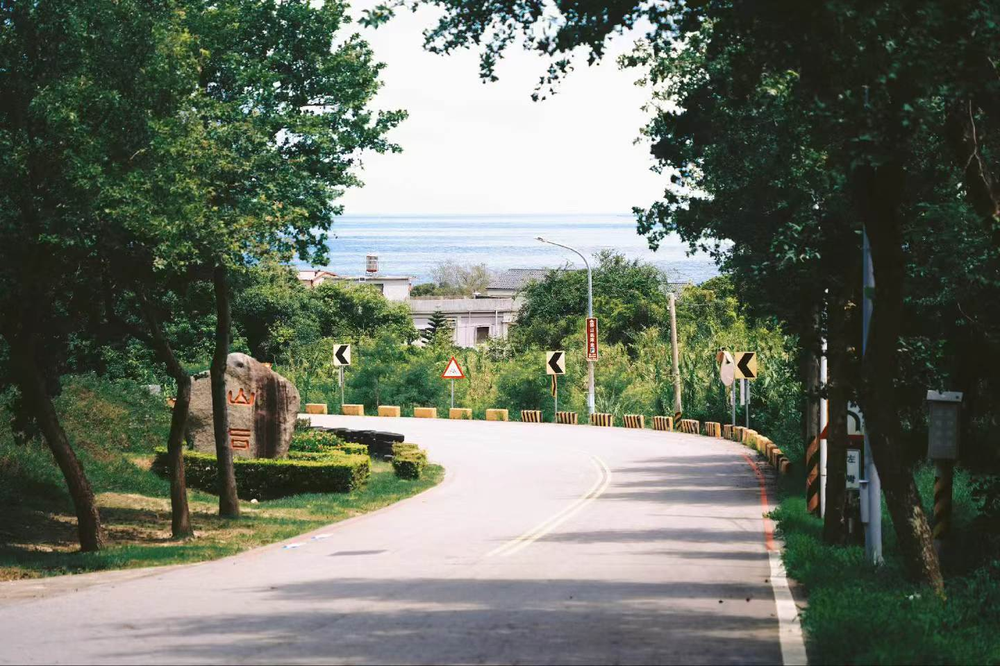

KINMEN COASTAL ROAD · SOUND STUDY
弯道望海 · 金门
站在树荫下，听一辆车沿弯道靠近，又慢慢远去。风与树叶持续作响，鸟鸣偶尔从两侧传来。

本人提供的金门旅行照片。声音为音效库素材的场景设计，并非同期录音。先听完整声景 · 2 分钟
固定编排，REAPER 实际导出。四种车辆在 15、45、77、108 秒出现；可佩戴耳机听声像变化。它不是 Wwise 运行录音。
逐个试听素材
单独播放时请先暂停其他播放器。车辆资产为归中的双声道，移动声像在工程和混音中实现。
风与树叶 · 60 秒
汽车 01 · 7.4 秒
汽车 02 · 11.8 秒
机车 01 · 12 秒
机车 02 · 12 秒
鸟鸣 01 · 2.8 秒
鸟鸣 02 · 3 秒
工程文件
Wwise 主工程 · 打开与检查说明 · 素材来源
七份音频已制作。Wwise 工程已生成，尚待在 2025.1.11.9262 中打开、试听和保存。